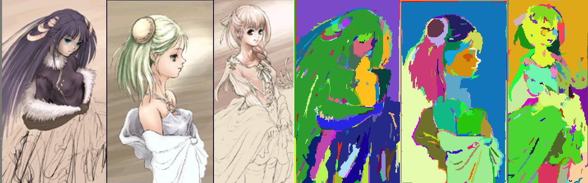

一种简单的基于最小生成树的图像分割方法
计算机视觉课内论文的参考，代码自己实现了一遍
一种基于图论的简单图像分割方法
摘要
本文讨论了一种基于图论最小生成树算法的图像区域分割方法。我们将图上每一个像素看成图论中的一个点，并将点与点之间的关系看成一条边构建一个图，然后我们通过这种方法进行对图的连通块的合并，从而得到一个个分割的区域，即为原图像的一种分割方案，并对分割后的结果进行染色得到直观地表示。在时间效率上相当优秀，与构造图中边数 $V$ 呈 $O(V\log V)$ 复杂度。
关键词：图像分割，最小生成树，聚类。
绪论
概述
图像的研究和应用中，人们往往对图像中的某些部分感兴趣，这些感兴趣的部分一般对应图像中特定的、具有特殊性质的区域（可以对应单一区域，也可以对应多个区域），称之为目标或前景;而其他部分称为图像的背景。为了辨识和分析目标，需要把目标从一幅图像中孤立出来，这就是图像分割要研究的问题。
研究背景及意义
图像分割是计算机视觉研究中的一个经典难题，已经成为图像理解领域关注的一个热点，图像分割是图像分析的第一步，是计算机视觉的基础，是图像理解的重要组成部分，同时也是图像处理中最困难的问题之一。
关于图像分割技术，由于问题本身的重要性和困难性，从20世纪70年代起图像分割问题就吸引了很多研究人员为之付出了巨大的努力。虽然到目前为止，还不存在一个通用的完美的图像分割的方法，但是对于图像分割的一般性规律则基本上已经达成的共识，已经产生了相当多的研究成果和方法。
图像分割就是把图像分成若干个特定的、具有独特性质的区域并提出感兴趣目标的技术和过程。根据灰度、彩色、空间纹理、几何形状等特征把图像划分成若干个互不相交的区域，使得这些特征在同一区域内表现出一致性或相似性，而在不同区域间表现出明显的不同。
它是由图像处理到图像分析的关键步骤。从数学角度来看，图像分割是将数字图像划分成互不相交的区域的过程。图像分割的过程也是一个标记过程，即把属于同一区域的像素赋予相同的编号。现有的图像分割方法主要分以下几类：基于阈值的分割方法、基于区域的分割方法、基于边缘的分割方法以及基于特定理论的分割方法等6。
- 基于阈值的分割方法： 阈值法的基本思想是基于图像的灰度特征来计算一个或多个灰度阈值，并将图像中每个像素的灰度值与阈值相比较，最后将像素根据比较结果分到合适的类别中。因此，该类方法最为关键的一步就是按照某个准则函数来求解最佳灰度阈值。
- 基于区域的分割方法：此类方法是将图像按照相似性准则分成不同的区域，主要包括种子区域生长法、区域分裂合并法和分水岭法等几种类型。
- 基于边缘的分割方法：所谓边缘是指图像中两个不同区域的边界线上连续的像素点的集合，是图像局部特征不连续性的反映，体现了灰度、颜色、纹理等图像特性的突变。
- 基于图论的分割方法：基于图论的分割方法的本质就是移除特定的边，将图划分为若干子图从而实现分割，即将带权图分为两部分的最小割。目前所了解到的基于图论的方法GraphCut，GrabCut和Random Walk等。
- 基于能量泛函的分割方法：使用连续曲线来表达目标边缘，并定义一个能量泛函使得其自变量包括边缘曲线，因此分割过程就转变为求解能量泛函的最小值的过程，一般可通过求解函数对应的欧拉(Euler-Lagrange)方程来实现，能量达到最小时的曲线位置就是目标的轮廓所在。
研究理论介绍
本章介绍了本方法进行图像分割的相关研究的理论基础。首先，介绍了图论的基础概念以及最小生成树的定义并介绍一些次要的技术；然后，介绍了分割过程中所需要的一些定义，包括分割区域的内部差异、区域之间的差异以及阈值函数；最后做出本章小结。
最小生成树（MST）
一个简单图由点集 $V$ 和边集 $E$组成，表示为 $G = (V,E)$ ，在本文中一个单独的像素。
无向图：边没有方向的图称为无向图。
带权图：图上的边有权值的图。
在一给定的无向图 $G = (V, E)$ 中，$(u, v)$ 代表连接顶点 $u$ 与顶点 $v$ 的边，而 $w(u, v)$ 代表此边的权重，若存在 $T$ 为 $E$ 的子集且为无循环图，使得
的 $w(T) = \sum\limits_{(u,v)\in t} \omega(u,v)$ 最小，则此 $T$ 为 $G$ 的最小生成树。
常用的求解 MST 的三种方法 Prim、Kruskal、Boruvka 算法都是基于贪心思想的算法，在本文中，出于复杂度问题（按秩合并与路径压缩优化的并查集复杂度为反阿克曼函数）和实现难度的考虑（也许用Boruvka算法会有意想不到的效果），使用基于并查集优化的 Kruskal 算法。
平滑处理
平滑3也称模糊，是一项简单且使用频率很高的图像处理方法。基本原理是将噪声所在像素点的像素值处理为其周围临近像素点的值的近似值。
图像常常被强度随机信号（也称为噪声）所污染。一些常见的噪声有椒盐（Salt & Pepper）噪声、脉冲噪声、高斯噪声等。椒盐噪声含有随机出现的黑白强度值．而脉冲噪声则只含有随机的白强度值（正脉冲噪声）或黑强度值（负脉冲噪声）。高斯噪声含有强度服从高斯或正态分布的噪声。
在本文中使用高斯滤波对图像进行平滑处理。
作用1：模糊，提取较大目标前，去除太小的细节，或将目标内的小间断连接起来。
作用2：去噪，改善图象质量，降低干扰平滑滤波对图像的低频分量增强，同时削弱高频分量，用于消除图像中的随机噪声。
高斯滤波
图像大多数噪声均属于高斯噪声，因此高斯滤波器应用也较广泛。高斯滤波5是一种线性平滑滤波，适用于消除高斯噪声，广泛应用于图像去噪。
在高斯滤波中，中心点的权重值加大，远离中心点的权重值减少，在此基础上计算邻域内各个像素值不同权重的和。可以简单地理解为，高斯滤波去噪就是对整幅图像像素值进行加权平均，针对每一个像素点的值，都由其本身值和邻域内的其他像素值经过加权平均后得到。
二维高斯分布：
$$
G( x , y ) = \frac { 1 } { 2 \pi \sigma ^ { 2 } } e ^ { - \frac { ( x ^ { 2 } + y ^ { 2 } ) } { 2 \sigma ^ { 2 } } }
$$
离散程度 $\sigma$ 越大，中心系数越小，图像越平滑，这里一般指定 $\sigma = 0.5$ 。
定义
$G$ ：图片转化为的图，由点集 $V$ 与边集 $E$ 构成。
$V$ ：图中的点集，每一个都对应原图上的一个像素。
$E$ ：图中的边集，每一个都代表原图上像素之间的关系（带权）。
$C$ ：图中的一个连通块，即对应原图上的一个分割，由 $V$ 的一个子集构成。
$Int(C)$ ：区域内当前维护的最小生成树上权值最大边的权值，即为：
$$
Int(C) = \max\limits_{e\in MST(C,E)}w(e)
$$
$Dif(C_1,C_2)$：两个分割 $C1$ 与 $C_2$ 间的距离，即为以最小的代价连接联通块 $C_1$ 与 $C_2$ 的边的权值。
$$
Dif(C_1, C_2) = \min\limits_{v_i \in C_1, v_j \in C_2, (v_i,v_j)\in E}{w(v_i,v_j)}
$$
当 $Dif(C_1, C_2) \le \min (Int(C_1,C_2))$ 时，两个分割 $C1$ 与 $C_2$ 便可以进行合并。
由于算法初始时各区域很小 $Int(C)$ 不能很好评测反映分割间的差距，我们需要构造一种方法使得在初始时发挥作用并随算法推进而降低效用，在这里我们引入一个阈值 $\tau$ ：
$$
\tau _C = \dfrac{k}{|C|}
$$
其中 $k$ 为一个设定好的常数， $|C|$ 为分割内的结点的数目即为连通块的大小。
并定义 $MInt(C_1,C_2) = \min(Int(C_1)+\tau (C_1), Int(C_2)+\tau (C_2))$ ， 当所有分割对 $C1$ 与 $C_2$ 满足 $Dif(C_1, C_2) \gt MInt(C_1,C_2)$时，合并过程结束。
PPM格式
PPM2是一种用于存储可携式图形映射：颜色（PPM）、灰度（PGM）和黑白（PBM）的简单格式。三种不同平台之间转换列出的光栅图像文件时，这些格式可以提供数据的中间表示。PPM格式是由Jeff Poskanzerom开发的。
由于PPM格式编码简单，读写快速易实现，本文所有图片都采用PPM格式，可以通过IrfanView看图软件进行浏览。
算法流程
首先我们读入PPM文件并将像素保存到矩阵当中。
然后将原矩阵拆分为RGB三个矩阵分别进行高斯滤波平滑操作。
之后我们遍历像素矩阵，考虑构造新图，对于一个像素点，我们需要使它和周围的八个像素进行连边，边的边权即为差异，定义为空间的欧氏距离10如下：
$$
w(u,v) = \sqrt{(R_u-R_v)^2 + (G_u-G_v)^2 + (B_u-B_v)^2}
$$
至此，我们得到了一个无向带权图，现在考虑Kruskal算法。
- 输入 $n$ 点 $m$ 边的图，初始化并查集1，每个像素都为独立的分割，并初始化阈值 $\tau$ 。
- 将 $m$ 条边加入未使用的边集，并按照边权进行非降序排序。
- 取出未使用边集当中边权最小的边，记录其权值为 $w$，连接了 $u$ 与 $v$ 两个点，记 $C_1$ 与 $C_2$ 分别为其所在连通块。
- 若 $w \le MInt(C_1,C_2) $，我们合并连通块 $C_1$ 与 $C_2$ 为 $C$，并更新 $C$ 的阈值，该操作可以通过并查集轻松完成。
- 将该边从边集中删除，并重复操作3直至集合为空。
- 按非降序遍历边集，若发现 $u$ 或 $v$ 所在分割过小，则强制合并。
- 返回该分割方案。
效果评估

结语
本文介绍了一种基于图论的图像分割算法，实现简单且复杂度优秀，能有效对图片个部分进行分割，虽然目前深度学习算法在图像分割中应用广泛，但是我们依然需要对基于传统算法的分割算法有深入的理解。
参考文献
[1] 并查集
[2] PPM - Netpbm color image format
[3] 图像平滑处理（归一化块滤波、高斯滤波、中值滤波、双边滤波）
[4] Efficient Graph-Based Image Segmentation
[5] 高斯滤波
[6] 图像分割之（一）概述
[7] 基于图的图像分割（Graph-Based Image Segmentation）
[8] 克鲁斯卡尔算法
[9] 最全综述 | 图像分割算法
[10] 余弦距离与欧式距离
代码
image.h
1 |
|
mst.h
1 |
|
filter.h
1 |
|
ppmio.h
1 |
|
seg-image.h
1 |
|
main.cpp
1 |
|